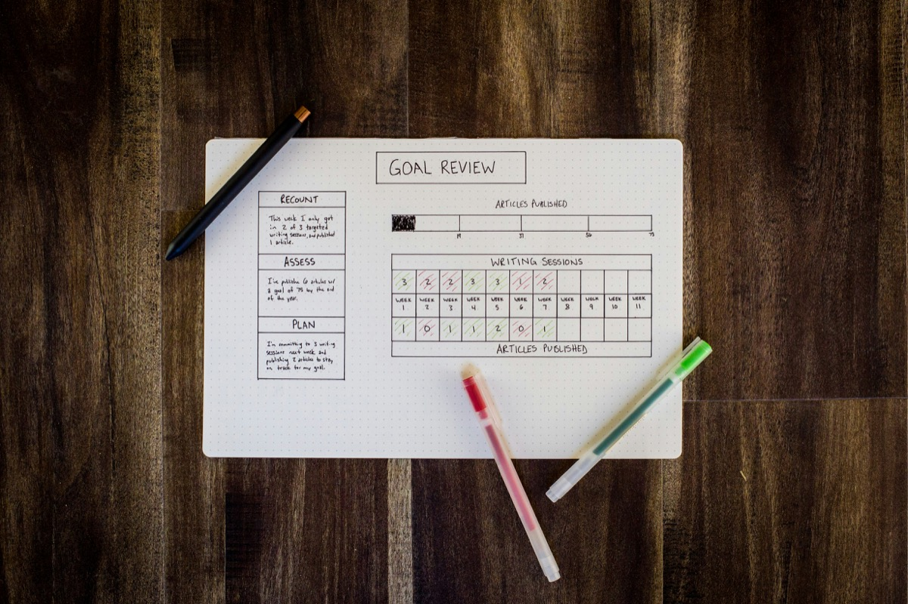

Track Energy Levels With Your Cycle: 5 Apps 2026
Some weeks you're up early and getting things done before 9am. Other weeks, getting off the couch feels like a project. If that rhythm repeats around the same time every month, this guide covers what's known about energy across the menstrual cycle, 5 apps for logging energy and fatigue day to day, and exactly what to track so your own pattern becomes visible instead of just a vague feeling.
Full Transparency
This guide is published by Holland Neurotech Inc., the company behind Go Go Gaia. Go Go Gaia is one of the five apps compared here. We included it because we think it's a strong option for this use case, and we've been honest about its limitations too. Each app on this list does something well, and the right one for you depends on what you're actually trying to log.
Quick Answer: Which App Should You Use?
The right pick depends on whether you want deep correlation, pure speed, a cycle-first tracker, or a tool built around pacing energy for a chronic condition. Here are the picks by use case:
- For treating energy as a core, first-class metric: Bearable. Rate energy on its own scale and see what it correlates with
- For the fastest possible daily log: Daylio. Under 10 seconds a day, no cycle awareness built in
- For a light, privacy-first cycle tracker: Clue. Add an energy tag to a clean, science-first period tracker
- For pacing chronic fatigue specifically: Visible. Purpose-built for energy management around illness-related fatigue
- For energy logged alongside cycle, sleep, mood, and food in one place: Go Go Gaia. 1-tap energy logs connected to your other data automatically
How We Picked These Apps
We shortlisted the 5 apps below from what people actually use to log energy and fatigue day to day, and compared them on what matters most for this use case: how energy is captured (a dedicated scale versus a general mood field), how fast a daily entry is, whether logs connect to cycle phase, and whether the app surfaces patterns for you automatically. Pricing was re-verified on the App Store in August 2026, and we read each app's current privacy policy rather than relying on its marketing pages.
Full disclosure: this site is published by Holland Neurotech Inc., the maker of Go Go Gaia. The list isn't ranked. Each app is presented as the fit for a specific need, we include our own app only where it genuinely belongs, and we say plainly when a competitor is the better choice.

Medical Disclaimer
This article is for educational and informational purposes only and does not constitute medical advice. It can't tell you why you're tired or whether your fatigue needs medical attention. Tracking apps record patterns. They don't diagnose or treat anything. Always talk with your doctor or another qualified healthcare provider about ongoing fatigue or any symptoms that concern you. Individual experiences vary, and what's typical for one person may not be typical for another.
What's Known About Energy and Your Cycle
Energy levels naturally vary across the menstrual cycle for many people. The Cleveland Clinic lists fatigue as one of the common physical experiences in the days leading up to a period, alongside the hormonal shifts that happen in the luteal phase, the second half of the cycle[1].
The Office on Women's Health describes premenstrual syndrome as a group of symptoms, including tiredness and low energy, that many people notice in the one to two weeks before their period starts[2]. Sleep also shifts across the cycle for a lot of people, and a poor stretch of sleep compounds how tired the day feels regardless of what's driving it. That's a good reason to log sleep next to energy rather than in isolation.
None of this means every dip in energy is about your cycle. Sleep, stress, workload, and plain overcommitment all move energy too, often more than cycle phase does in any given week. Fatigue that doesn't ease up between cycles, rather than clustering in the same window each month, is also worth a look at other explanations, including thyroid function. That's exactly why a single tired week doesn't tell you much on its own, and why logging over 2 to 3 cycles matters more than any general rule.
It's also worth saying clearly what this article is not. This isn't a guide to cycle syncing, the practice of adjusting your workouts, food, or schedule to match a general template for each phase. That's a different approach with different evidence behind it. This is about logging what's actually happening for you, so any planning you do later is based on your own data instead of someone else's average.
Low energy rarely shows up alone. A lot of people notice it alongside brain fog and trouble concentrating on the same days, and food cravings tend to cluster in that same window too, something our guide to tracking cravings against your cycle covers in more depth.
How We Compared These Apps
We compared each app on its App Store listing, published pricing, privacy policy, and recent user reviews, all checked in August 2026. We did not run a clinical study, and we haven't hands-on tested every feature of every app. Full disclosure: we make Go Go Gaia, one of the five apps here.
We weighted four things most heavily for this use case: whether energy gets its own dedicated field or scale (not just buried inside a general mood rating), how fast a daily log is, whether the app ties your energy logs to cycle phase, and whether it surfaces patterns for you instead of leaving you to scroll back through old entries.
The 5 Apps Compared
These five split into three groups: correlation-first trackers (Bearable, Go Go Gaia), a speed-first logger (Daylio), a cycle-first tracker you can adapt (Clue), and a specialist built for chronic-fatigue pacing (Visible). The right pick depends on whether depth, speed, cycle context, or pacing support matters most to you.
For Treating Energy as a Core Metric: Bearable
Best if you want: Energy rated on its own dedicated scale, correlated against sleep, cycle, and anything else you log.
Key Features
- Energy is a built-in factor with its own rating scale, not folded into a general mood score
- Fully custom symptoms and factors alongside it, so you can rate fatigue, motivation, or brain fog too
- "Impacts" view that correlates your factors with your energy over time
- Optional period tracking module
- Sleep and activity data import from Apple Health and Google Fit
Strengths
- Energy really is a first-class metric here, not an afterthought. If you want to know exactly how your energy relates to sleep, cycle day, and exercise at once, this is what Bearable was built for
- The correlation engine is genuinely strong, one of the best available for this kind of multi-factor question
- Generous free tier and strong App Store ratings (4.8/5 on iOS)
- GDPR-compliant and states it doesn't sell data
- Cross-platform (iOS and Android)
Limitations
- Setup takes real time. There are a lot of factors to configure before the correlation view gets useful
- Cycle tracking is a module, not the core. No phase predictions or cycle-specific insights
- No nutrition tracking
Who Should Choose This
- You want to correlate energy with several other factors at once, not just your cycle
- Correlation depth matters more to you than cycle features
- You need Android support
Pricing
Free (generous tier), Premium ~$34.99/year or ~$6.99/month. Available on iOS and Android.
For the Fastest Possible Daily Log: Daylio
Best if you want: A log you'll actually keep, because each entry takes under 10 seconds.
Key Features
- Micro-logging: pick a mood, tap a few activities, done
- Custom activities, so you can add "low energy," "napped," or "pushed through it"
- Streaks, reminders, and simple stats
- Mood-over-time charts and activity counts
Strengths
- The lowest-friction logging on this list. A tracker you keep up for 3 months beats one that dies after a week
- Custom activities adapt reasonably well to logging energy levels as a proxy
- Inexpensive premium tier
- Cross-platform (iOS and Android)
Limitations
- No dedicated energy scale and no cycle tracking. You're repurposing mood and activity fields to stand in for energy
- To see cycle patterns, you'd keep a separate period tracker and line up the dates yourself
- Analysis is basic: mood averages and activity counts, not multi-factor correlations
Who Should Choose This
- You've abandoned detailed trackers before and need the absolute minimum daily ask
- You're fine cross-referencing a separate period app
- You want a general mood tracking app more than an energy-specific one
Pricing
Free (core features), with an inexpensive premium upgrade (typically under $5/month). Available on iOS and Android.
For a Light, Privacy-First Cycle Tracker: Clue
Best if you want: A clean, science-first cycle tracker where energy is just one of several built-in categories you tap through.
Key Features
- Cycle tracking with phase information and predictions
- Energy is one of 30+ built-in tracking categories, alongside mood, sleep, and more
- Custom tags, so you can add your own labels beyond the presets
- Science-backed content reviewed by researchers
- GDPR-compliant (Berlin-based, EU privacy standards)
Strengths
- Energy logging sits right next to your cycle data by default, no extra setup required
- Clean, minimal interface that's quick to log in
- Strong privacy track record
- Cross-platform (iOS and Android)
Limitations
- Pattern analysis is limited. You'll mostly spot trends by scrolling back through past cycles yourself
- No connection between your energy logs and sleep, exercise, or other lifestyle factors
- Free users see regular prompts to upgrade to Clue Plus
Who Should Choose This
- You want a cycle tracker first and energy logging as one piece of it
- You prioritize privacy and a simple interface
- You're happy to review your own data for patterns
Pricing
Free (with upgrade prompts), Clue Plus ~$39.99/year. Available on iOS and Android.
For Pacing Chronic Fatigue: Visible
Best if you want: An app built specifically around managing energy for a chronic illness, not general wellness tracking.
Key Features
- Daily energy and symptom check-ins built for people managing chronic fatigue, long COVID, ME/CFS, and similar conditions
- Pacing tools designed to help you plan activity around your available energy
- Heart rate variability integration with compatible wearables
- Reports formatted for sharing with a healthcare provider
- Built with input from the chronic illness community
Strengths
- Genuinely purpose-built for this exact problem. If your fatigue is tied to a chronic condition rather than (or in addition to) your cycle, Visible was designed around that specific need in a way general wellness apps aren't
- Pacing features go beyond logging into actually helping plan the day around energy
- Strong community trust within the chronic fatigue and long COVID space
- Cross-platform (iOS and Android)
Limitations
- No cycle tracking built in, so you'd need a separate app to line up cycle dates
- Narrower general-wellness feature set than an all-in-one tracker, since it's focused on one problem by design
- Advanced pacing and HRV features sit behind a subscription
Who Should Choose This
- You're managing a chronic illness where energy pacing is a daily concern, not just a monthly curiosity
- You want tools for planning around your energy, not just recording it
- You're comfortable using a second app for cycle dates if you also want that context
Pricing
Free to download, with a subscription for advanced pacing and HRV features. Available on iOS and Android.
For Energy Logged Alongside Everything Else: Go Go Gaia
Best if you want: Energy tracked in the same app as your cycle, sleep, mood, food, and workouts, with the app connecting the dots for you.
Key Features
- 1-tap energy logging, alongside cycle, sleep, mood, food, and fitness tracking in one app
- Correlation insights that connect your energy logs to cycle phase, sleep, and exercise, drawn from your own data
- Health Clues: save a hypothesis like "my energy drops the week before my period" and the app checks it against your logged data over time
- Passive wearable data (Apple Watch, Oura, Garmin, WHOOP) fills in sleep and recovery without manual logging
- Voice logging, including on Apple Watch

Strengths
- Tracks cycle, energy, sleep, mood, food, and workouts in one free app, so you're not juggling three apps to see how they relate
- Surfaces patterns like "energy is higher on weeks you sleep 7+ hours" instead of leaving you to eyeball a calendar
- 1-tap logging keeps daily friction low while still feeding the correlation engine
- No ads, no data selling
Limitations
- iOS only. No Android version yet
- Newer app with a smaller community than Clue or Flo
- Full AI insights and advanced correlations require premium ($9.99/month or $49.99/year)
Who Should Choose This
- You want energy logged in the same app as your cycle, sleep, and food, with the pattern-finding done for you
- You wear an Apple Watch, Oura, Garmin, or WHOOP and want sleep data included without extra effort
- You're on iPhone and prefer one app over juggling two or three
Pricing
Free (most features), Premium $9.99/month or $49.99/year for full AI insights and advanced correlations. Available on the iOS App Store.
Feature Comparison Table
Quick read of the table: Bearable and Go Go Gaia both give energy a dedicated field and analyze it against other factors for you. Daylio is fastest but has no dedicated energy scale or cycle awareness, Clue is cycle-first with lighter analysis, and Visible is the specialist for chronic-fatigue pacing. Here's the full picture (✅ full support, ⚠️ partial, 🔒 premium only, ❌ not available):
| Feature | Bearable | Daylio | Clue | Visible | Go Go Gaia |
|---|---|---|---|---|---|
| Dedicated energy scale | ✅ Core factor | ⚠️ Via mood/activities | ✅ Built-in category | ✅ Core check-in | ✅ 1-tap logs |
| Cycle & phase tracking | ⚠️ Optional module | ❌ None | ✅ Core focus | ❌ None | ✅ With phase context |
| 1-tap / fast logging | ⚠️ Depends on setup | ✅ Built for it | ⚠️ Quick, not 1-tap | ⚠️ Short check-in | ✅ 1-tap habits |
| Correlation insights | ✅ "Impacts" view | ⚠️ Simple stats | ❌ Manual review | ⚠️ Pacing-focused | ✅ Multi-factor |
| Sleep & wearable data | ✅ Health app import | ❌ None | ⚠️ Basic Apple Health | ✅ HRV integration | ✅ Watch, Oura, Garmin, WHOOP |
| Nutrition & workout tracking | ❌ None | ❌ None | ❌ None | ❌ None | ✅ Both, in one app |
| Doctor-ready export | 🔒 Premium | 🔒 CSV, premium | ⚠️ Limited | ✅ Reports | ✅ Free |
| Free tier quality | ✅ Generous | ✅ Generous | ⚠️ Upgrade prompts | ✅ Core free | ✅ Generous |
| Platforms | iOS + Android | iOS + Android | iOS + Android | iOS + Android | iOS only |
| Best for | Deep correlation | Fastest logging | Light cycle-first | Chronic fatigue pacing | Energy + cycle + everything else |
When Another App Is the Better Choice
Go Go Gaia isn't the right pick for everyone reading this, and a few of these apps win outright for specific situations. Here's where we'd honestly point you elsewhere, in two or three sentences each.
Choose Visible if you're managing chronic fatigue, long COVID, or ME/CFS
This is the one app on this list built around pacing, not just recording. If energy management is a daily, ongoing concern tied to a chronic condition rather than mainly your cycle, Visible's pacing tools and HRV integration go further than a general wellness tracker will.
Choose Bearable if energy is one of several factors you're comparing
If you're tracking energy alongside migraines, anxiety, gut issues, or several medications, Bearable's "Impacts" view is the strongest multi-factor correlation tool on this list. It's also on Android, which Go Go Gaia isn't. Budget an evening for setup and it will repay you.
Choose Daylio if you'll only ever log one tap a day
Be honest with yourself about your track record with trackers. If every detailed app has died on your phone within two weeks, Daylio's 10-second entries are the version of this that survives. You'll give up a dedicated energy scale and cycle awareness, but a 3-month Daylio streak beats a 5-day streak in anything fancier.
Choose Clue if you want the lightest cycle-first option
If you mostly want a clean period tracker with energy as one of the built-in categories, Clue does that with minimal fuss and a strong privacy record. You'll review patterns yourself rather than getting computed insights, and for some people that's plenty.
What to Log to See Your Own Pattern
Log four things daily: energy, sleep, your period dates, and anything unusual that day. Keep each one to a tap or a 1-to-5 rating, and keep it up for 2 to 3 full cycles. That's the whole method. Here's how to make it stick:
- Make logging stupidly easy. One tap or one rating per item. The longer a daily log takes, the less likely it is to survive past a few weeks, so keep it to a few seconds. Design for your worst day, not your best.
- Define your scale once, up front. Decide what a 1 and a 5 mean for you (1 might mean "needed a nap to function," 5 might mean "felt unstoppable") and keep the meaning stable across the whole log. Consistent labels make patterns readable later.
- Track sleep alongside energy, not separately. A low-energy week after several short nights isn't necessarily a cycle pattern, it might mostly be a sleep pattern. Apps that pull sleep from a wearable automatically remove this guesswork.
- Anchor everything to cycle day. The pattern you're hunting is "the same cycle week, repeating." After 2 to 3 cycles, compare your late luteal week (the week before each period) across months and look for repeats.
- Write down the outliers. A red-eye flight, a sick kid, a big deadline. A one-line note saves you from misreading a rough week as a hormonal one.
- Decide what to do with the pattern once you see it. Some people use it to plan lighter weeks around a predictable low-energy stretch. Some just bring the record to a doctor if the fatigue feels like more than a normal dip. What you do with the data is up to you, the app's job is just to make the pattern visible.
A tracking app does two of these steps for you: a 1-tap log like Go Go Gaia's keeps the friction near zero, and correlation insights handle the cycle-day comparison automatically, surfacing things like whether your low-energy taps cluster in the second half of your cycle. A paper log or a plain notes app can work too, if you'll fill it in every day. The app's advantage is that it does the lining-up for you. If low friction is the deciding factor, our comparison of apps by how little logging they actually require ranks options on exactly that.
Frequently Asked Questions
The short version: energy naturally varies across the cycle for many people, no single app is required to see your own pattern, and 2 to 3 tracked cycles is generally what it takes. The details:
Why does my energy drop before my period?
Energy naturally varies across the menstrual cycle for many people, and estrogen and progesterone both shift in the days before a period. The Cleveland Clinic lists fatigue among common premenstrual symptoms. The size and shape of that dip is different for everyone, which is why logging your own cycles is more useful than a general rule.
Is there an app just for tracking energy and fatigue?
Visible is built specifically for pacing and energy management around chronic fatigue. For general energy logging tied to your cycle, Bearable treats energy as a first-class metric, Daylio offers the fastest daily log, Clue supports energy tags inside a cycle-first tracker, and Go Go Gaia logs energy alongside cycle, sleep, mood, and food in one app.
How long should I track energy before I see a pattern?
Plan on at least 2 full cycles, and 3 if you can manage it. One cycle can be thrown off by a bad night's sleep, a stressful week, or travel. Comparing the same cycle week across 2 or 3 months is what makes a real pattern visible.
What's the difference between tracking energy and cycle syncing?
Cycle syncing means adjusting your routine to a general template of what each cycle phase supposedly calls for. Tracking energy means logging your own daily energy levels against your own cycle dates to see what your pattern actually is, before you plan anything around it.
Should I log energy as a number or just low/medium/high?
Either works, as long as you're consistent. A simple 1-to-5 scale or three-tap low/medium/high is easier to keep up daily than a detailed journal entry, and a consistent simple scale is more useful for spotting a pattern than an inconsistent detailed one.
Can tracking energy tell me if something is medically wrong?
A tracking app records your patterns, it doesn't diagnose anything. What it can do is give you a dated record to bring to a doctor if you decide your fatigue is worth discussing, which is more useful than trying to describe how tired you've felt from memory.
Does exercise or sleep affect this data?
Exercise and sleep absolutely affect this data, which is exactly why it's worth logging alongside energy rather than ignoring it. A low-energy week after several short nights of sleep may say more about sleep than about cycle phase. Apps that pull sleep data from a wearable automatically remove that guesswork.
What if I'm tired all the time, not just around my period?
Then your log will show that, and it's still useful. A record that shows low energy with no cycle pattern is worth sharing with a healthcare provider if you decide to talk to someone about it. This article focuses on the cycle-linked kind, but the logging habit works either way.
Final Thoughts
If your energy has a monthly rhythm, logging is the only way to know for sure, and to know your own shape of it rather than a general average. Two to three tracked cycles usually gets you there.
Pick the app that matches what you're actually trying to do: Bearable if energy is one of several factors you want correlated, Daylio for raw speed, Clue for a light cycle-first tracker, Visible if you're pacing chronic fatigue, and Go Go Gaia if you want energy logged alongside your cycle, sleep, mood, and food in one place.
Still deciding? Just pick one and log for two cycles. See what you find.
Patterns Need 2 to 3 Cycles of Data to Show Up
That's the article's whole method in one line. A 1-tap energy log takes under 30 seconds a day, and by the end of your second cycle you can compare the same week across months and see whether your energy dip actually repeats.
Log energy with a single tap. The correlation insights do the cycle-day math for you.